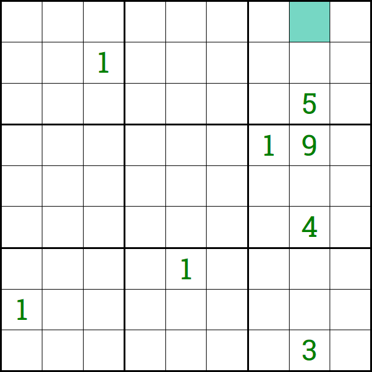

About
Via Wikipedia: Sudoku (数独 sūdoku, digit-single) (/suːˈdoʊkuː/, /-ˈdɒk-/, /sə-/, originally called Number Place) is a logic-based, combinatorial number-placement puzzle. The objective is to fill a 9×9 grid with digits so that each column, each row, and each of the nine 3×3 subgrids that compose the grid (also called "boxes", "blocks", or "regions") contain all of the digits from 1 to 9. The puzzle setter provides a partially completed grid, which for a well-posed puzzle has a single solution.
Completed games are always a type of Latin square with an additional constraint on the contents of individual regions. For example, the same single integer may not appear twice in the same row, column, or any of the nine 3×3 subregions of the 9×9 playing board.
Controls
WASD and arrow keys control the cursor; allowing it to move to adjacent spaces. Additionally, clicking a tile moves the cursor to that tile. Keys 1-9 place a corresponding digit/note/color into the selection. Space bar rotates between input "modes." Holding shift quick-switches to note taking or "pencil marking." Clicking and dragging selects all tiles hovered over with the mouse. Holding control adds any selected tiles to the current selection (either with arrow key controls or mouse controls). Enter toggles locking the selected digits, so they cannot be altered.
Basic Strategy
Only choice
It is generally recommended to start a standard sudoku by going over each digit and determining if, for each subregion, there is only one position that digit can take. Here, in the upper right subregion, there is only one place a 1 can go. The 1st row, 2nd row, 7th column, and 9th column all other contain 1s, so the tile in the 3rd row, 8th column (C8) must contain a 1.
The same strategy may be used in rows and columns, as opposed to subregions. Above, we see that there is only one location in column 8 where a 1 can go, so it must be that a 1 is in this location (A8)
Single Possibility
In the next example, it can be deduced that the center tile (E5) must be a 1, because all other possibilities can be eliminated.
Snyder notation
A note or pencil mark indicates where it is possible for a digit to be. The naïve approach to pencil marking is to fill every possibility for very tile. While this may reveal single possibilities it quickly becomes too crowded and obfuscates useful information. This poses the question: when should I pencil mark? While there is no absolute answer, there is a good guiding principle which should be followed if possible: Snyder notation.
Snyder notation says to pencil mark only when the number of possibilities in a subregion for a digit is equal to 2 (of course if it were 1, you would know where the digit is). This keeps the total number of pencil marks down while providing 90+ percent of the useful information. Most tricks will not rely on more than 2 notes in one region.
Note: You may find it useful pencil if there are only 2 places for a digit to go in a row or column but it is NOT true for the subregions which contain those pencil marks, this is useful but can be confusing if you forget that you have broken standard notation.
Pointing pairs
One helpful way to perceive the board is too look for so-called "pointing pairs." Pointing pairs occur when (using Snyder notation) two notes within one sub-region are confined within the same row or column. The effect this has is that no other tiles in that row/column can contain that digit.
Here we see that a 1 can be deduced using pointing pairs in H6. The logic follows thusly: 1 is either in B5 or C5, in either case 1 is in column 5. So then, because G5 and H5 are in column 5 and are not B5 or C5, they cannot contain a 1. Therefor it is trivial to see that a 1 must be in H6.